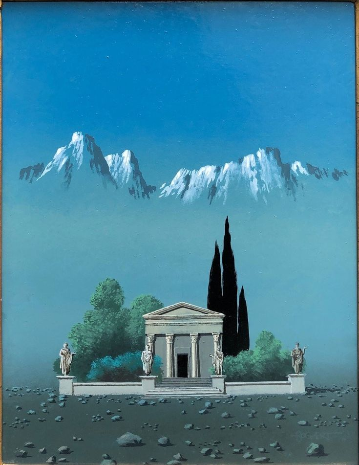

<html></html>
  <head>
<!-- script para leer aframe -->
    <script src="https://aframe.io/releases/1.3.0/aframe.min.js"></script>
    <title>materiales</title>

<!-- icono del la pestaña -->
    <link rel="shortcut icon" href="./Recursos/imagenes/icone.ico">

<!-- para leer animación -->
    <script src="https://cdn.jsdelivr.net/gh/donmccurdy/aframe-extras@v6.1.1/dist/aframe-extras.min.js"></script>

<!-- script para texturas -->
     <script src="https://cdn.jsdelivr.net/npm/aframe-enviropacks@latest/aframe-enviropacks.js"></script>

  </head>

  <body>
    <a-scene renderer="coloManagement: true; physicallyCorrectLights: true" enviropack-material="shader:auto" fog="type:linear; color:#AAA far:600">
   
    <a-assets>
<!-- Modelos -->
        <a-asset-item id="cerdito" src="./Recursos/modelos/cerdito.glb"></a-asset-item>


    </a-assets>
        <!-- Imagenes -->

        


   
</a-entity>
      </a-entity>

    <a-entity enviropack="preset: sandstone"></a-entity>

<!-- llamando modelos -->
<a-entity position="-21.594 4 -10.276" rotation="0 0 0" gltf-model="#cerdito" scale="4 4 4"  enviropack-material="material: gold; displacementMap: true" shadow animation__rotacion="property:rotation; to: 360 360 360; loop:true; dur:9000; easing: linear"
link="href:index.html"></a-entity>

    <!-- Link para otra pestaña -->
    <a-entity position="1.999 2 -1.134" rotation="0 130 0" scale="1.040 2.260 2.020" geometry="primitive: plane; width: 2; height: 2"
    material="src: #montana; transparent: true; side:double" animation="property: rotation; to: 0 -360 0; loop:true; dur:8000; easing:linear"
    link="href:materiales.html"></a-entity>

<a-torus-knot color="#B84A39" arc="180" p="2" q="7" radius="5" radius-tubular="0.1" material="" geometry=""></a-torus-knot>


    </a-scene>
  </body>
</html>